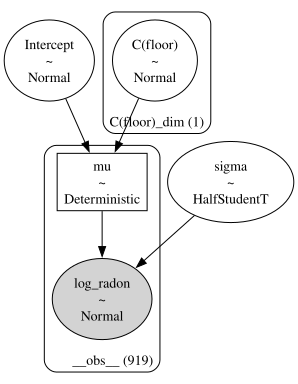
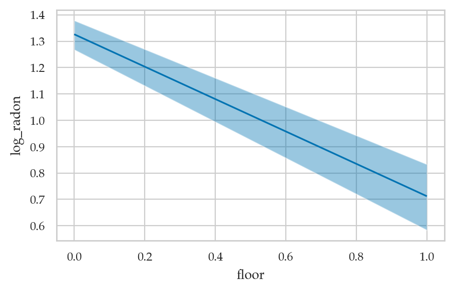
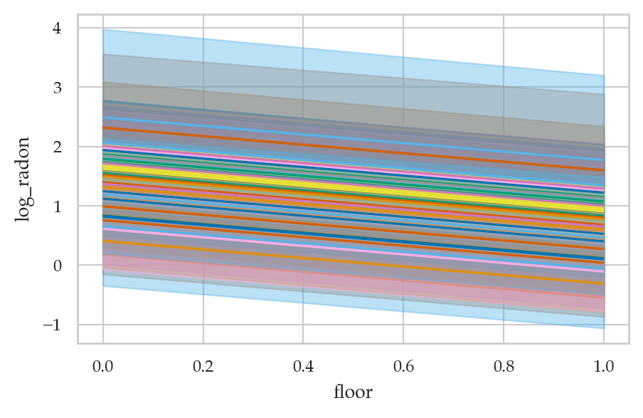

Section 5.5 — Hierarchical models#
This notebook contains the code examples from Section 5.5 Hierarchical models from the No Bullshit Guide to Statistics.
See also:
Notebook setup#
# load Python modules
import os
import numpy as np
import pandas as pd
import seaborn as sns
import matplotlib.pyplot as plt
# Figures setup
plt.clf() # needed otherwise `sns.set_theme` doesn"t work
from plot_helpers import RCPARAMS
RCPARAMS.update({"figure.figsize": (5, 3)}) # good for screen
# RCPARAMS.update({"figure.figsize": (5, 1.6)}) # good for print
sns.set_theme(
context="paper",
style="whitegrid",
palette="colorblind",
rc=RCPARAMS,
)
# High-resolution please
%config InlineBackend.figure_format = "retina"
# Where to store figures
DESTDIR = "figures/bayes/hierarchical"
<Figure size 640x480 with 0 Axes>
# set random seed for repeatability
np.random.seed(42)
#######################################################
Definitions#
Model#
Example: radon levels#
https://bambinos.github.io/bambi/notebooks/radon_example.html
Description: Contains measurements of radon levels in homes across various counties.
Source: Featured in Andrew Gelman and Jennifer Hill’s book Data Analysis Using Regression and Multilevel/Hierarchical Models.
Application: Demonstrates partial pooling and varying intercepts/slopes in hierarchical modeling.
Data#
radon = pd.read_csv("../datasets/radon.csv")
radon.groupby("county")["log_u"].count().sort_values()
---------------------------------------------------------------------------
KeyError Traceback (most recent call last)
Cell In[4], line 2
1 radon = pd.read_csv("../datasets/radon.csv")
----> 2 radon.groupby("county")["log_u"].count().sort_values()
File /opt/hostedtoolcache/Python/3.10.15/x64/lib/python3.10/site-packages/pandas/core/groupby/generic.py:1951, in DataFrameGroupBy.__getitem__(self, key)
1944 if isinstance(key, tuple) and len(key) > 1:
1945 # if len == 1, then it becomes a SeriesGroupBy and this is actually
1946 # valid syntax, so don't raise
1947 raise ValueError(
1948 "Cannot subset columns with a tuple with more than one element. "
1949 "Use a list instead."
1950 )
-> 1951 return super().__getitem__(key)
File /opt/hostedtoolcache/Python/3.10.15/x64/lib/python3.10/site-packages/pandas/core/base.py:244, in SelectionMixin.__getitem__(self, key)
242 else:
243 if key not in self.obj:
--> 244 raise KeyError(f"Column not found: {key}")
245 ndim = self.obj[key].ndim
246 return self._gotitem(key, ndim=ndim)
KeyError: 'Column not found: log_u'
Bayesian model#
TODO: add formulas
Bambi model#
import bambi as bmb
covariate_priors = {
"floor": bmb.Prior("Normal", mu=0, sigma=10),
"log_u": bmb.Prior("Normal", mu=0, sigma=10),
"floor|county": bmb.Prior("Normal", mu=0, sigma=bmb.Prior("Exponential", lam=1)),
"sigma": bmb.Prior("Exponential", lam=1),
}
covariate_model = bmb.Model(
formula="log_radon ~ 0 + floor + log_u + (0 + floor|county)",
priors=covariate_priors,
data=radon,
noncentered=True
)
covariate_model
WARNING (pytensor.tensor.blas): Using NumPy C-API based implementation for BLAS functions.
Formula: log_radon ~ 0 + floor + log_u + (0 + floor|county)
Family: gaussian
Link: mu = identity
Observations: 919
Priors:
target = mu
Common-level effects
floor ~ Normal(mu: 0.0, sigma: 10.0)
log_u ~ Normal(mu: 0.0, sigma: 10.0)
Group-level effects
floor|county ~ Normal(mu: 0.0, sigma: Exponential(lam: 1.0))
Auxiliary parameters
sigma ~ Exponential(lam: 1.0)
Model fitting and analysis#
covariate_results = covariate_model.fit(
draws=2000,
tune=2000,
target_accept=0.9,
chains=4,
)
Auto-assigning NUTS sampler...
Initializing NUTS using jitter+adapt_diag...
Multiprocess sampling (4 chains in 4 jobs)
NUTS: [sigma, floor, log_u, floor|county_sigma, floor|county_offset]
Sampling 4 chains for 2_000 tune and 2_000 draw iterations (8_000 + 8_000 draws total) took 8 seconds.
Compare to previous results#
Conclusions#
Explanations#
Discussion#
Exercises#
Links#
EXTRA MATERIAL#
Radon levels#
cf. mitzimorris/brms_feb_28_2023
mn_radon = pd.read_csv("../datasets/mn_radon.csv")
# radon["county_id"] = radon["county_id"].astype('category')
mn_radon
| floor | county | log_radon | log_uranium | county_id | |
|---|---|---|---|---|---|
| 0 | 1 | AITKIN | 0.788457 | -0.689048 | 1 |
| 1 | 0 | AITKIN | 0.788457 | -0.689048 | 1 |
| 2 | 0 | AITKIN | 1.064711 | -0.689048 | 1 |
| 3 | 0 | AITKIN | 0.000000 | -0.689048 | 1 |
| 4 | 0 | ANOKA | 1.131402 | -0.847313 | 2 |
| ... | ... | ... | ... | ... | ... |
| 914 | 0 | WRIGHT | 1.856298 | -0.090024 | 84 |
| 915 | 0 | WRIGHT | 1.504077 | -0.090024 | 84 |
| 916 | 0 | WRIGHT | 1.609438 | -0.090024 | 84 |
| 917 | 0 | YELLOW MEDICINE | 1.308333 | 0.355287 | 85 |
| 918 | 0 | YELLOW MEDICINE | 1.064711 | 0.355287 | 85 |
919 rows × 5 columns
ALT manually downloaod radon#
# # Get radon data
# path = "https://raw.githubusercontent.com/pymc-devs/pymc-examples/main/examples/data/srrs2.dat"
# radon_df = pd.read_csv(path)
# import pymc as pm
# # Get city data
# city_df = pd.read_csv(pm.get_data("cty.dat"))
# # Strip spaces from column names
# radon_df.columns = radon_df.columns.map(str.strip)
# # Filter to keep observations for "MN" state only
# df = radon_df[radon_df.state == "MN"].copy()
# city_mn_df = city_df[city_df.st == "MN"].copy()
# # Compute fips
# df["fips"] = 1_000 * df.stfips + df.cntyfips
# city_mn_df["fips"] = 1_000 * city_mn_df.stfips + city_mn_df.ctfips
# # Merge data
# df = df.merge(city_mn_df[["fips", "Uppm"]], on="fips")
# df = df.drop_duplicates(subset="idnum")
# # Clean county names
# df.county = df.county.map(str.strip)
# # Compute log(radon + 0.1)
# df["log_radon"] = np.log(df["activity"] + 0.1)
# # Compute log of Uranium
# df["log_u"] = np.log(df["Uppm"])
# # Let's map floor. 0 -> Basement and 1 -> Floor
# df["floor"] = df["floor"].map({0: "basement", 1: "ground"})
# # Sort values by floor
# df = df.sort_values(by="floor")
# # Reset index
# df = df.reset_index(drop=True)
# df
# radon = df[["idnum", "state", "county", "floor", "log_radon", "log_u"]]
# radon.to_csv("../datasets/radon.csv", index=False)
import bambi as bmb
Complete pooling#
mod_cp = bmb.Model("log_radon ~ 1 + C(floor)", data=mn_radon)
mod_cp
Formula: log_radon ~ 1 + C(floor)
Family: gaussian
Link: mu = identity
Observations: 919
Priors:
target = mu
Common-level effects
Intercept ~ Normal(mu: 1.2246, sigma: 2.3354)
C(floor) ~ Normal(mu: 0.0, sigma: 5.7237)
Auxiliary parameters
sigma ~ HalfStudentT(nu: 4.0, sigma: 0.8529)
mod_cp.build()
mod_cp.graph()

idata_cp = mod_cp.fit()
Auto-assigning NUTS sampler...
Initializing NUTS using jitter+adapt_diag...
Multiprocess sampling (4 chains in 4 jobs)
NUTS: [sigma, Intercept, C(floor)]
Sampling 4 chains for 1_000 tune and 1_000 draw iterations (4_000 + 4_000 draws total) took 1 seconds.
import arviz as az
az.summary(idata_cp)
| mean | sd | hdi_3% | hdi_97% | mcse_mean | mcse_sd | ess_bulk | ess_tail | r_hat | |
|---|---|---|---|---|---|---|---|---|---|
| C(floor)[1] | -0.614 | 0.074 | -0.756 | -0.480 | 0.001 | 0.001 | 6146.0 | 3038.0 | 1.0 |
| Intercept | 1.326 | 0.030 | 1.268 | 1.379 | 0.000 | 0.000 | 5576.0 | 3154.0 | 1.0 |
| sigma | 0.823 | 0.019 | 0.789 | 0.860 | 0.000 | 0.000 | 6248.0 | 3292.0 | 1.0 |
bmb.interpret.plot_predictions(mod_cp, idata_cp, "floor");
/Users/ivan/Projects/Minireference/STATSbook/noBSstatsnotebooks/venv/lib/python3.12/site-packages/arviz/rcparams.py:368: FutureWarning: stats.hdi_prob is deprecated since 0.18.0, use stats.ci_prob instead
warnings.warn(
Default computed for conditional variable: floor
{kind=link}

No pooling#
mod_np = bmb.Model("log_radon ~ 1 + C(floor) + C(county_id)", data=mn_radon)
# mod_np
idata_np = mod_np.fit()
Auto-assigning NUTS sampler...
Initializing NUTS using jitter+adapt_diag...
Multiprocess sampling (4 chains in 4 jobs)
NUTS: [sigma, Intercept, C(floor), C(county_id)]
Sampling 4 chains for 1_000 tune and 1_000 draw iterations (4_000 + 4_000 draws total) took 5 seconds.
The rhat statistic is larger than 1.01 for some parameters. This indicates problems during sampling. See https://arxiv.org/abs/1903.08008 for details
The effective sample size per chain is smaller than 100 for some parameters. A higher number is needed for reliable rhat and ess computation. See https://arxiv.org/abs/1903.08008 for details
fig, axs = bmb.interpret.plot_predictions(mod_np, idata_np, ["floor", "county_id"]);
axs[0].get_legend().remove()
/Users/ivan/Projects/Minireference/STATSbook/noBSstatsnotebooks/venv/lib/python3.12/site-packages/arviz/rcparams.py:368: FutureWarning: stats.hdi_prob is deprecated since 0.18.0, use stats.ci_prob instead
warnings.warn(
Default computed for conditional variable: floor, county_id
{kind=link}

Partial Pooling Model: varying slope#
The partial pooling formula estimates per-county intercepts which drawn
from the same distribution which is estimated jointly with the rest of
the model parameters. The 1 is the intercept co-efficient. The
estimates across counties will all have the same slope.
log_radon ~ floor + (1 | county_id)
mod_pp1 = bmb.Model("log_radon ~ (1 | C(county_id)) + C(floor)", data=radon)
mod_pp1
---------------------------------------------------------------------------
KeyError Traceback (most recent call last)
File ~/Projects/Minireference/STATSbook/noBSstatsnotebooks/venv/lib/python3.12/site-packages/pandas/core/indexes/base.py:3805, in Index.get_loc(self, key)
3804 try:
-> 3805 return self._engine.get_loc(casted_key)
3806 except KeyError as err:
File index.pyx:167, in pandas._libs.index.IndexEngine.get_loc()
File index.pyx:196, in pandas._libs.index.IndexEngine.get_loc()
File pandas/_libs/hashtable_class_helper.pxi:7081, in pandas._libs.hashtable.PyObjectHashTable.get_item()
File pandas/_libs/hashtable_class_helper.pxi:7089, in pandas._libs.hashtable.PyObjectHashTable.get_item()
KeyError: 'county_id'
The above exception was the direct cause of the following exception:
KeyError Traceback (most recent call last)
File ~/Projects/Minireference/STATSbook/noBSstatsnotebooks/venv/lib/python3.12/site-packages/formulae/terms/call_resolver.py:131, in LazyVariable.eval(self, data_mask, env)
130 try:
--> 131 result = data_mask[self.name]
132 except KeyError:
File ~/Projects/Minireference/STATSbook/noBSstatsnotebooks/venv/lib/python3.12/site-packages/pandas/core/frame.py:4102, in DataFrame.__getitem__(self, key)
4101 return self._getitem_multilevel(key)
-> 4102 indexer = self.columns.get_loc(key)
4103 if is_integer(indexer):
File ~/Projects/Minireference/STATSbook/noBSstatsnotebooks/venv/lib/python3.12/site-packages/pandas/core/indexes/base.py:3812, in Index.get_loc(self, key)
3811 raise InvalidIndexError(key)
-> 3812 raise KeyError(key) from err
3813 except TypeError:
3814 # If we have a listlike key, _check_indexing_error will raise
3815 # InvalidIndexError. Otherwise we fall through and re-raise
3816 # the TypeError.
KeyError: 'county_id'
During handling of the above exception, another exception occurred:
KeyError Traceback (most recent call last)
Cell In[19], line 1
----> 1 mod_pp1 = bmb.Model("log_radon ~ (1 | C(county_id)) + C(floor)", data=radon)
2 mod_pp1
File ~/Projects/Minireference/STATSbook/noBSstatsnotebooks/venv/lib/python3.12/site-packages/bambi/models.py:169, in Model.__init__(self, formula, data, family, priors, link, categorical, potentials, dropna, auto_scale, noncentered, center_predictors, extra_namespace)
167 design = remove_common_intercept(design)
168 else:
--> 169 design = fm.design_matrices(
170 self.formula.main, self.data, na_action, 1, additional_namespace
171 )
173 if design.response is None:
174 raise ValueError(
175 "No outcome variable is set! "
176 "Please specify an outcome variable using the formula interface."
177 )
File ~/Projects/Minireference/STATSbook/noBSstatsnotebooks/venv/lib/python3.12/site-packages/formulae/matrices.py:556, in design_matrices(formula, data, na_action, env, extra_namespace)
553 else:
554 raise ValueError(f"'data' contains {incomplete_rows_n} incomplete rows.")
--> 556 design = DesignMatrices(description, data, env)
557 return design
File ~/Projects/Minireference/STATSbook/noBSstatsnotebooks/venv/lib/python3.12/site-packages/formulae/matrices.py:54, in DesignMatrices.__init__(self, model, data, env)
51 self.model = model
53 # Evaluate terms in the model
---> 54 self.model.eval(data, env)
56 if self.model.response:
57 self.response = ResponseMatrix(self.model.response)
File ~/Projects/Minireference/STATSbook/noBSstatsnotebooks/venv/lib/python3.12/site-packages/formulae/terms/terms.py:1254, in Model.eval(self, data, env)
1244 """Evaluates terms in the model.
1245
1246 Parameters
(...)
1251 The environment where values and functions are taken from.
1252 """
1253 # Set types on all terms
-> 1254 self.set_types(data, env)
1256 # Evaluate common terms
1257 encodings = self._get_encoding_bools()
File ~/Projects/Minireference/STATSbook/noBSstatsnotebooks/venv/lib/python3.12/site-packages/formulae/terms/terms.py:1161, in Model.set_types(self, data, env)
1149 """Set the type of the terms in the model.
1150
1151 Calls ``.set_type()`` method on term in the model.
(...)
1158 The environment where values and functions are taken from.
1159 """
1160 for term in self.terms:
-> 1161 term.set_type(data, env)
File ~/Projects/Minireference/STATSbook/noBSstatsnotebooks/venv/lib/python3.12/site-packages/formulae/terms/terms.py:646, in GroupSpecificTerm.set_type(self, data, env)
644 component.set_type(data)
645 elif isinstance(component, Call):
--> 646 component.set_type(data, env)
647 else:
648 raise ValueError(
649 "Can't set type on GroupSpecificTerm because at least one of the components "
650 f"is of the unexpected type {type(component)}."
651 )
File ~/Projects/Minireference/STATSbook/noBSstatsnotebooks/venv/lib/python3.12/site-packages/formulae/terms/call.py:109, in Call.set_type(self, data_mask, env)
107 transforms_env = Environment([{**TRANSFORMS, **ENCODINGS}])
108 self.env = transforms_env.with_outer_namespace(env.namespace)
--> 109 x = self.call.eval(data_mask, self.env)
111 if is_numeric_dtype(x):
112 self.kind = "numeric"
File ~/Projects/Minireference/STATSbook/noBSstatsnotebooks/venv/lib/python3.12/site-packages/formulae/terms/call_resolver.py:264, in LazyCall.eval(self, data_mask, env)
261 if self.stateful_transform:
262 callee = self.stateful_transform
--> 264 args = [arg.eval(data_mask, env) for arg in self.args]
265 kwargs = {name: arg.eval(data_mask, env) for name, arg in self.kwargs.items()}
267 return callee(*args, **kwargs)
File ~/Projects/Minireference/STATSbook/noBSstatsnotebooks/venv/lib/python3.12/site-packages/formulae/terms/call_resolver.py:136, in LazyVariable.eval(self, data_mask, env)
134 result = env.namespace[self.name]
135 except KeyError as e:
--> 136 raise e
137 return result
File ~/Projects/Minireference/STATSbook/noBSstatsnotebooks/venv/lib/python3.12/site-packages/formulae/terms/call_resolver.py:134, in LazyVariable.eval(self, data_mask, env)
132 except KeyError:
133 try:
--> 134 result = env.namespace[self.name]
135 except KeyError as e:
136 raise e
File ~/Projects/Minireference/STATSbook/noBSstatsnotebooks/venv/lib/python3.12/site-packages/formulae/environment.py:17, in VarLookupDict.__getitem__(self, key)
15 except KeyError:
16 pass
---> 17 raise KeyError(key)
KeyError: 'county_id'
idata_pp1 = mod_pp1.fit()
az.plot_forest(idata_pp1, var_names=["1|C(county_id)"], combined=True);
Partial Pooling Model 2: varying slope, varying intercept#
The varying-slope, varying intercept model adds floor to the
group-level co-efficients. Now estimates across counties will all have
varying slope.
log_radon ~ floor + (1 + floor | county_id)
mod_pp2 = bmb.Model("log_radon ~ (1 + C(floor) | C(county_id))", data=mn_radon)
mod_pp2
idata_pp2 = mod_pp2.fit()
idata_pp2.posterior
az.plot_forest(idata_pp2, var_names=["1|C(county_id)", "C(floor)|C(county_id)"], combined=True);
Educaitonal data#
cf. https://mc-stan.org/users/documentation/case-studies/tutorial_rstanarm.html
1.1 Data example We will be analyzing the Gcsemv dataset (Rasbash et al. 2000) from the mlmRev package in R. The data include the General Certificate of Secondary Education (GCSE) exam scores of 1,905 students from 73 schools in England on a science subject. The Gcsemv dataset consists of the following 5 variables:
school: school identifier
student: student identifier
gender: gender of a student (M: Male, F: Female)
written: total score on written paper
course: total score on coursework paper
import pyreadr
# Gcsemv_r = pyreadr.read_r('/Users/ivan/Downloads/mlmRev/data/Gcsemv.rda')
# Gcsemv_r["Gcsemv"].dropna().to_csv("../datasets/gcsemv.csv", index=False)
gcsemv = pd.read_csv("../datasets/gcsemv.csv")
gcsemv.head()
import bambi as bmb
m1 = bmb.Model(formula="course ~ 1 + (1 | school)", data=gcsemv)
m1
idata1 = m1.fit()
az.summary(idata1)
m3 = bmb.Model(formula="course ~ gender + (1 + gender|school)", data=gcsemv)
m3
m3.fit()
Sleepstudy dataset#
Description: Contains reaction times of subjects under sleep deprivation conditions.
Source: Featured in the R package lme4.
Application: Demonstrates linear mixed-effects modeling with random slopes and intercepts.
https://bambinos.github.io/bambi/notebooks/sleepstudy.html
sleepstudy = bmb.load_data("sleepstudy")
sleepstudy
Pigs dataset#
https://bambinos.github.io/bambi/notebooks/multi-level_regression.html
import statsmodels.api as sm
dietox = sm.datasets.get_rdataset("dietox", "geepack").data
dietox
pigsmodel = bmb.Model("Weight ~ Time + (Time|Pig)", dietox)
pigsidata = pigsmodel.fit()
az.summary(pigsidata, var_names=["Intercept", "Time", "1|Pig_sigma", "Time|Pig_sigma", "sigma"])
Tadpoles#
https://www.youtube.com/watch?v=iwVqiiXYeC4
logistic regression model